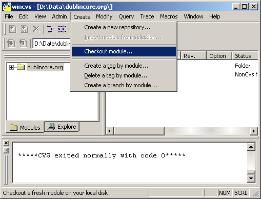
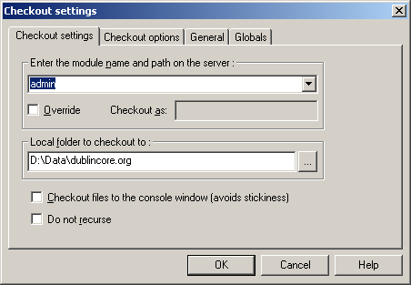
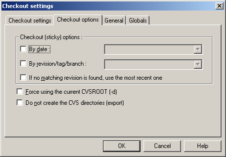
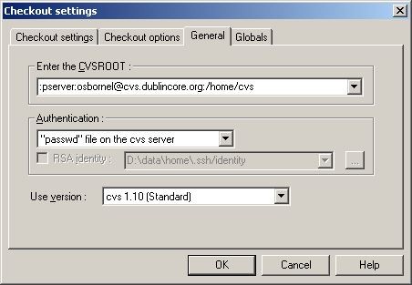
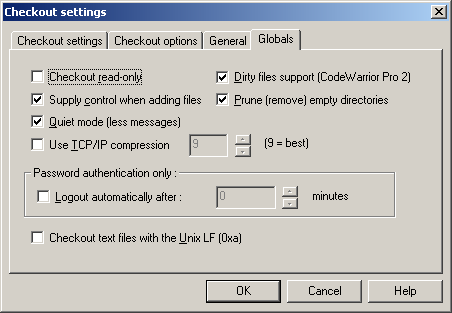
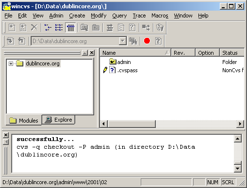
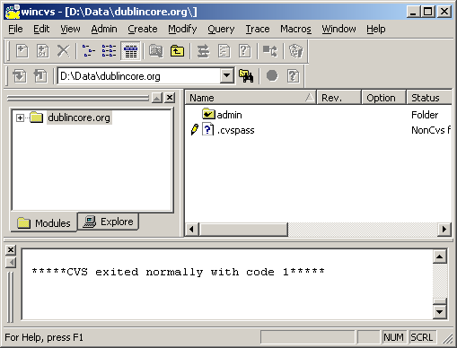

| 1 | To checkout a module after logging in, select Create -> Checkout module. |
|  | |
| 2 |
The Checkout settings dialog will appear. Select admin from the Enter the module name and path on the server pulldown menu. Make sure the Local folder to checkout to is set to the same folder you specified in your Preferences. |
|  | |
| 3 | Make any necessary changes to the Checkout options tab as shown below. |
|  | |
| 4 |
From the General tab:
Note: These settings should be the same as what you had previously set in your Preferences. |
|  | |
| 5 | Make any necessary changes to the Globals tab as shown below. |
|  | |
| Once your settings are complete, click the OK button. | |
| 6 |
If this is your first time checking out a module, WinCVS will download the entire module contents to your hard drive. This could take some time, as WinCVS has to download the entire site. If you previously checked out a module, WinCVS will only download newer files added since you last checked out the module. Note: It is very important that you check out a module every time you use WinCVS, as other people may have made changes to documents that you normally work on! |
|  | |
| 7 |
Once WinCVS has finished checking out the module, the result in the Output area will read: *****CVS exited normally with code 1***** |
|  | |
| You may now navigate to your working directory and files. |